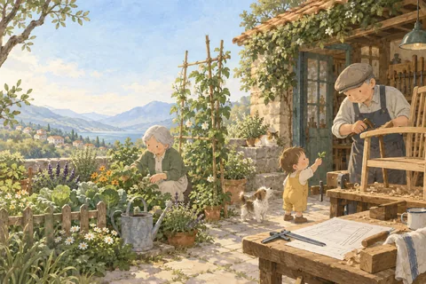

一本书，一个入口
园丁与木匠
The Gardener and the Carpenter: What the New Science of Child Development Tells Us About the Relationship Between Parents and Children
Farrar, Straus and Giroux · 2016 · ISBN 9780374229702
这本书在我们的深读计划中。

30 秒 · 先读这一段
讲什么
高普尼克用园丁与木匠的比喻，追问父母是否应该把孩子塑造成预定的样子。她把儿童学习、游戏和想象的研究与自己的养育经历放在一起，讨论成人能够提供什么条件。
适合谁
适合希望重新思考养育目标、同时愿意照顾家庭现实条件的父母与教育工作者。
值不值得读
如果养育已变成不断验收孩子表现的工作，这本书值得读；Kirkus的书评也肯定了它对儿童学习与养育目标的讨论。最需要追问的是，从儿童怎样学习，并不能直接推出每个家庭应该怎样安排时间、资源和边界。
三个带走
- 区分希望孩子获得的能力，以及只为满足成人期待而设定的结果。
- 观察孩子在游戏和提问中怎样学习，再决定成人何时介入。
- 讨论自由探索时，把照护时间、场地与支持资源一起算进去。
如果只能用三句话讲这本书：把养孩子当成照图纸做家具的「工作」，是二十世纪后期才流行起来的新观念；人类的童年特别长、特别「乱」，恰恰是为了让孩子去探索一个谁也预料不到的未来；父母能做的，是像园丁一样给孩子一片安全、肥沃的土壤，而不是决定他们长成什么样。
这是一本什么书
《园丁与木匠》（The Gardener and the Carpenter，2016 年出版）的作者艾莉森·高普尼克（Alison Gopnik）是加州大学伯克利分校的发展心理学家，也是哲学家；中文版由刘家杰、赵昱鲲翻译，2019 年出版。它不是一本育儿技巧手册，而是用儿童发展研究和进化生物学，回头追问：父母和孩子之间，到底是一种什么关系。书里穿插着她自己养三个儿子、带孙辈的经历。
书名就是全书的比喻。高普尼克把她反对的做法叫「教养」（parenting）：父母像木匠，心里有一张图纸，把材料加工成预定的成品，成败看成品像不像图纸。她主张的是园丁：园丁也要流汗、要付出，但他的工作是「创造肥沃的土壤」，让不同的植物各自生长，各有各的美，也各有各的毛病。她指出，parenting 这个词 1958 年才在美国出现，七十年代末才流行开。
书是怎么组织的
全书一篇引言、八章，加尾声和后记：
- 第 1—3 章讲「为什么」：「教养」是一种糟糕的现代发明；童年是人类进化的关键策略；爱是这套策略的保障。第 3 章把爱孩子的人分成三类：父母、祖父母，以及「异亲」——族群里其他分担育儿的人。 - 第 4—6 章讲孩子怎么学：边看边学（模仿）、边听边学（听解释、问为什么）、边玩边学（打闹、玩玩具、假装）。 - 第 7—8 章讲学校和科技：第 7 章「边练边学」讲学徒制和学校，指出目标导向的学校是一种新发明；第 8 章讲屏幕和网络对孩子意味着什么。 - 尾声和后记回到哲学：养孩子的意义，以及在一连串矛盾中找平衡。
书里的几个人
作者自己：她在读研究生时同时成了妈妈和科学家。她坦白自己就是「焦虑的中产阶级父母」之一：大儿子和二儿子在公立高中不适应，要不要像小儿子那样送去私立学校？该不该让大儿子读完大学，而不是去做音乐？她说自己一辈子都在感受「教养」的威力，也一辈子在抗拒它。
三个儿子：阿列克谢、尼古拉斯和安德鲁斯。同一个家庭长大，性格却不同：在攀爬架上，大儿子总爬到最顶端，但上去之前先确认自己下得来；二儿子头也不回地往上爬，后来成了很成功的投资人。她说，孩子们没有一个复制了她的生活。
孙子奥吉和孙女乔治（她共有三个孙辈）：奥吉 2012 年 10 月出生。一岁时，祖母每周二下午带他逛农贸市场：他凑上去咬向日葵，指着气球，模仿祖父用木勺舀冰沙，有人跳舞时跟着节拍晃动小脚。乔治生下来就带着一种罕见的基因病「先天性黑色素细胞痣」，巨大的痣覆盖了大半个背部。作者说，这丝毫没有改变她对乔治的感情，爱孩子是「对某个人无条件的承诺」。换句话说，爱不是挑选一件完美的成品。
作者想让我们看到什么
高普尼克的判断有三层：第一，孩子不是可以按图纸加工的材料，「教养」这个目标本身就错了；第二，人类童年比任何物种都长，小孩的意识像一盏「灯笼」，同时照亮四周，不像成年人专注时的「聚光灯」只照亮一处，这种混乱和好奇是在为不可预测的未来做准备；第三，孩子通过模仿、提问和假装游戏，像小科学家一样弄清世界的因果。她最有力的例子来自作家埃米莉·拉普：拉普的儿子罗南患绝症，注定活不过三岁，永远不会「长成」什么，但母亲的爱一点也不因此减少。
她也诚实地承认没有答案的地方：屏幕和网络对下一代的长远影响，她的回答是「我们真的不知道」，要等这一代人长大才知道；关于人类进化起源的各种假说，她说常常像学术上的「罗夏墨迹测验」，各人看出各人想看的东西；公立还是私立这类选择，她借哲学家以赛亚·伯林的「价值多元论」说，本来就没有简单的答案。
怎么读
第一次读，先读引言和第 1 章，弄清园丁和木匠的区别；再读第 6 章「边玩边学」和第 7 章「边练边学」，看玩耍和学校各自在做什么；最后读尾声。带着一个问题读：我今天为孩子做的事里，哪些是在按图纸加工，哪些是在给土壤施肥？
为什么还要读原书
这篇导读只讲了骨架。原书的说服力在实验和故事的细节里：孩子怎样在实验室里「过度模仿」大人，奥吉怎样把鳄梨树想象成老虎的家。这些要读原书才能体会。
带走一点
高普尼克说，为人父母的成功，在于养大的孩子能够自己做决定，哪怕是灾难性的决定。能给的是安全、稳定和无条件的爱；孩子最后长成什么样，不在我们的图纸上。
知识卡
孩子怎么学：看、听、玩
看
作者的实验室后来换了一个玩具重做
演示者说自己也不知道玩具怎么用时，孩子只模仿必要的动作；演示者自称专家时，孩子连不必要的细节也照做。
听
孩子看到一只大多数时候像鸟、有时又像鱼的动物，妈妈叫它「鱼」，陌生人叫它「鸟」，陌生人对的可能性更大。
依恋关系安全的孩子，在谁都可能对的时候更愿意听妈妈的，在陌生人更可能对的时候会跟陌生人说「鸟」；焦虑型依恋的孩子即使妈妈可能错了，也选择相信妈妈。
玩
一组孩子看到大人像老师那样演示一个玩具的一种功能，另一组看到大人「不小心」碰出了这个功能。
被正式教过的孩子多半只重复那一个动作，没被教的孩子会去试更多可能，发现更多隐藏功能。
这三个实验说明
孩子从谁那里学、学什么，和他对这个人的感受分不开。
依据：本书论坛核对稿（第 2 楼）
木匠与园丁
木匠
木匠心里有一张图纸，把材料加工成预定的成品
园丁
园丁的工作是准备一片安全、肥沃的土壤，让不同的植物各自生长
园丁也流汗
照顾花园「需要大汗淋漓地努力付出，疲于耕地、辛苦施肥」
园丁也装防护门
「就像我们可以为3岁的孩子遮盖好电源插头并给楼梯间装上防护门一样」，大人也可以让危险的尝试少一些代价
园丁也搭支架
大人不替孩子搭知识，而是搭一个架子，让孩子自己往上搭
区别在哪
两种角色的区别不在要不要付出、要不要立规矩，而在目标：木匠要一个预定的成品，园丁要一片让孩子自己长的土壤。
依据：本书论坛核对稿（主楼、第 1 楼）
主流书评怎么看 《卫报》书评标题直接说"如今的育儿方式全错了"，认为这本书是对"结果驱动型育儿"的重要纠偏，但也提醒孩子成长的问题不能全部归因于育儿方式〔1〕。《观察家报》书评态度更正面，称这是一种"有机的教养方式"，认同书中"孩子不该都按同一份说明书养大"的说法〔2〕。
主要保留意见 《华盛顿邮报》书评认可书里科学背景带来的说服力，但明确表示希望作者能给文化、官僚制度、法律和人口结构这些让父母难以当"园丁"的外部力量留出更多篇幅〔3〕。《纽约书评》的长文走得更远，认为"园丁/木匠"这组二分本身"是一个稻草人，或者说两个稻草人"，质疑真实的教养行为很难这样一分为二〔4〕。一篇学术向书评基本接受"教养方式差异通常难以预测成年特质"这一核心结论，真正的批评落在书末的政策建议上，认为那部分"松散，更多是姿态而不是论证"〔5〕。
与书中框架不完全吻合的证据 1994年一项研究指出，"权威型/专制型"这套源自西方的量表本身带有文化偏向，未能捕捉中国育儿里"训导"这一独立概念；华裔母亲在"训导"量表上得分更高，且与学业成就正相关，这对"控制等于疏离的木匠"这种二元框架构成了一个局部反例〔6〕。
这本书的口碑 英文版在Goodreads上评分3.76，近3000人评分〔7〕；中文新版在豆瓣评分8.2，但评价人数不多，只有25人〔8〕。
我们的看法 这本书在主流书评里评价总体正面，被视为对"结果驱动型育儿"的一次有力纠正；同时多篇评论指出，把教养简化成"园丁"和"木匠"两种人格，可能忽略了文化、制度和经济条件的作用。读者可以把书中的比喻当作一个提醒，而不是一个能覆盖所有育儿处境的结论。
出处
- Bee Wilson，2016，The Gardener and the Carpenter by Alison Gopnik review – modern parenting is all wrong
- Lara Feigel，2016，The Gardener and the Carpenter review – an organic approach to parenting
- Erika Christakis，2016，The Gardener and the Carpenter（书评摘录，经聚合页确认）
- Marcia Angell，2016，Why Be a Parent?
- verysmalldreams.com，2019，Review: The Gardener and the Carpenter
- Ruth Chao，1994，Beyond Parental Control and Authoritarian Parenting Style
- Goodreads，2026，The Gardener and the Carpenter
- 豆瓣读书，2026，园丁与木匠（新版）
AI 时代怎么读
考虑给孩子使用AI时，可以先问它是否扩大了孩子自己提问和尝试的空间，再讨论效率。
奖项与读者回响
本版目录
展开目录
- 献给
- 艾莉森·高普尼克简介
- 引言 你是园丁，还是木匠
- 01 “教养”是一种糟糕的现代发明
- 混乱是童年的主旋律
- 02 童年，人类进化的关键策略
- 养育孩子比狩猎技能更重要
- 03 爱，持续进化的保障
- 爱的三面手1：父母
- 04 边看边学
- 孩子都是优秀的小演员
- 05 边听边学
- 依恋模式决定孩子更相信谁
- 06 边玩边学
- 打闹是一种社交演练
- 07 边练边学
- 学徒训练是历史主流教育方式
- 08 科技与孩子的未来
- “阅读”是门新技术
- 尾声 养育孩子的意义
- 后记 为人父母是在一系列矛盾中寻找平衡的艺术
- 致谢
- 注释及参考文献
- 译者后记 别再“焚琴煮鹤”你的孩子了